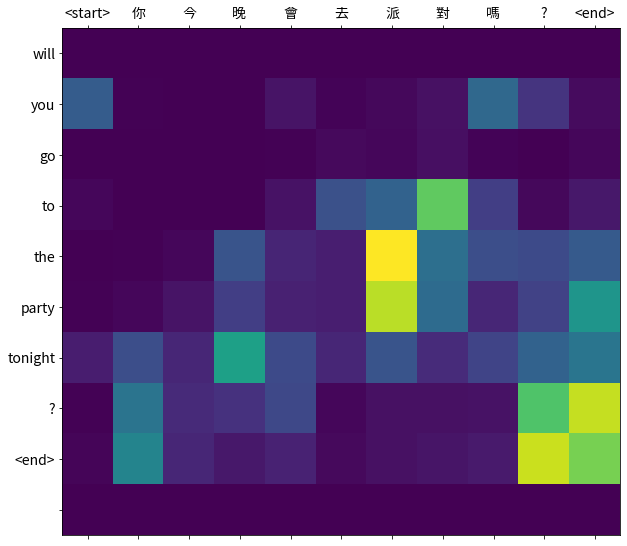
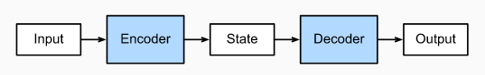
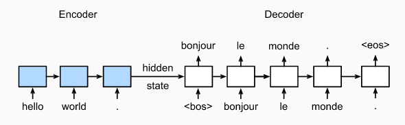
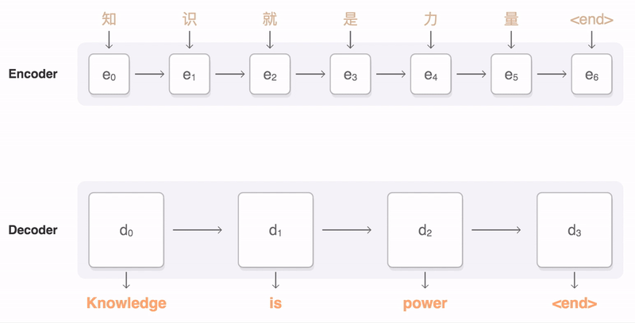
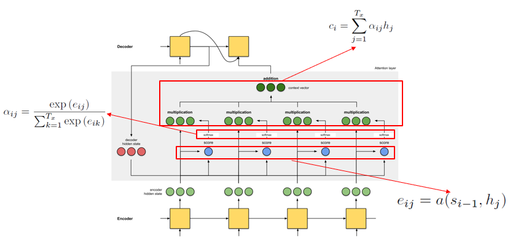
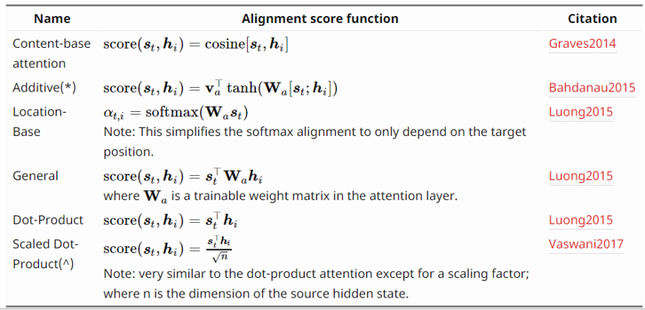
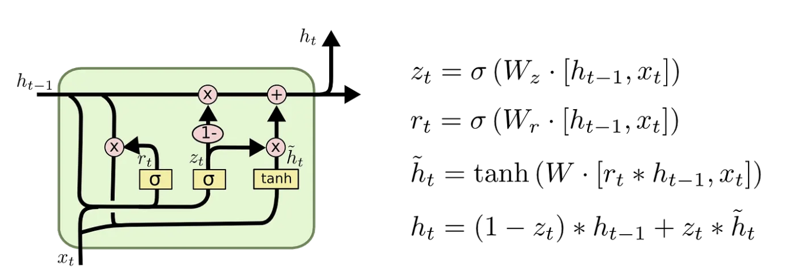

Seq2Seq Learning & Neural Machine Translation
Sequence to sequence learning (Seq2Seq) is about training models to convert sequences from one domain (e.g. sentences in Chinese) to sequences in another domain (e.g. the same sentences translated to English). This can be used for machine translation, free-form question answering (generating a natural language answer given a natural language question), text summarization, and image captioning. In general, it is applicable any time you need to generate text.
In this lab, we will introduce how to train a seq2seq model for Chinese to English translation. After training the model in this notebook, you will be able to input a Chinese sentence, such as "你今晚會去派對嗎?", and return the English translation: "will you go to the party tonight?".
The translation quality is reasonable for a toy example, but the generated attention plot is perhaps more interesting. This shows which parts of the input sentence has the model's attention while translating:

Seq2Seq Learning
Encoder-Decoder Architecture
The encoder-decoder architecture is a neural network design pattern. In this architecture, the network is partitioned into two parts, the encoder and the decoder. The encoder’s role is encoding the inputs into hidden state, or hidden representation, which often contains several tensors. Then the hidden state is passed into the decoder to generate the outputs.

Sequence to Sequence
The sequence to sequence (seq2seq) model is based on the encoder-decoder architecture to generate a sequence output for a sequence input, where both the encoder and the decoder tend to both be recurrent neural networks (RNNs). The hidden state of the encoder is used directly to initialize the hidden state of decoder, bringing information from the encoder to the decoder. In machine translation, the encoder transforms a source sentence, i.e. “你今晚會去派對嗎?”, into hidden state, which is a vector, that captures its semantic information. The decoder then uses this state to generate the translated target sentence, e.g. “will you go to the party tonight?”.

Sequence to Sequence with Attention Mechanism
Now, let’s talk about the attention mechanism. What is it and why do we need it?
Let’s use Neural Machine Translation (NMT) as an example. In NMT, the encoder maps the meaning of a sentence into a fixed-length hidden representation, this representation is expected to be a good summary of the entire input sequence, where the decoder can generate a corresponding translation based on that vector.
A critical and apparent disadvantage of this fixed-length context vector design is the incapability of the system to remember longer sequences. It is common to see that the fixed-length vector forgot the earlier parts of the input sentence once it has processed the entire input. A solution we proposed in Bahdanau et al., 2014 and Luong et al., 2015.. These papers introduced and refined a technique called Attention, which highly improved the quality of machine translation systems. Attention allows the model to focus on the relevant parts of the input sequence as needed.
That was the idea behind Attention! It can be illustrated as follows:

Details of attention¶
Notations:
- $T_x$: the length of the input
- $h_j$: the $j_{th}$ hidden state of the encoder
- $s_i$: the $i_{th}$ hidden state of the decoder
- $c_i$: context vector, a sum of hidden states of the input sequence, weighted by alignment scores
- $a$: alignment(match) score function, calculate the match score between two vectors($s_{i-1}$ and $h_j$)
- $e_{ij}$: alignment(match) score between the $s_{i-1}$ and $h_j$
- $\alpha_{ij}$: softmax of the alignment(match) score

And there are many types of score function:

For more details, please read this blog: Attn: Illustrated Attention
Gated Recurrent Unit (GRU)

Teacher Forcing
Teacher forcing is an efficient and effective method used widely in the training process of recurrent neural networks, which uses the ground truth from a previous time step as the input to the next time step.
Neural Machine Translation
Next, we will show how to train a seq2seq model using a translation dataset (Chinese to English), and then we will demonstrate some results of the translation to evaluate the model. In this lab, we will use GRU layers.
import os
import warnings
warnings.filterwarnings("ignore")
import torch
import torch.nn as nn
import torch.nn.functional as F
from torch.utils.data import TensorDataset, DataLoader, random_split
import matplotlib.pyplot as plt
import matplotlib.ticker as ticker
import unicodedata
import re
import numpy as np
import time
from matplotlib.font_manager import FontProperties
device = torch.device('cuda' if torch.cuda.is_available() else 'cpu')
print('Using device:', device)
Using device: cuda
Prepare the dataset
# dataset path
# use the Chinese-English dataset
path_to_file = "./data/eng-chinese.txt"
Data preprocessing
- Add a start and end token to each sentence.
- Clean the sentences by removing special characters.
- Create a word index and reverse word index (dictionaries mapping from word → id and id → word).
- Pad each sentence to a maximum length.
def unicode_to_ascii(s):
return ''.join(c for c in unicodedata.normalize('NFD', s)
if unicodedata.category(c) != 'Mn')
def preprocess_eng(w):
w = unicode_to_ascii(w.lower().strip())
# creating a space between a word and the punctuation following it
# eg: "he is a boy." => "he is a boy ."
w = re.sub(r"([?.!,])", r" \1 ", w)
# replace several spaces with one space
w = re.sub(r'[" "]+', " ", w)
# replacing everything with space except (a-z, A-Z, ".", "?", "!", ",")
w = re.sub(r"[^a-zA-Z?.!,]+", " ", w)
w = w.rstrip().strip()
# adding a start and an end token to the sentence
# so that the model know when to start and stop predicting.
w = '<start> ' + w + ' <end>'
return w
def preprocess_chinese(w):
w = unicode_to_ascii(w.lower().strip())
w = re.sub(r'[" "]+', "", w)
w = w.rstrip().strip()
w = " ".join(list(w)) # add the space between words
w = '<start> ' + w + ' <end>'
return w
# u means unicode encoder
en_sentence = u"May I borrow this book?"
chn_sentence = u"我可以借這本書麼？"
print(preprocess_eng(en_sentence))
print(preprocess_chinese(chn_sentence))
print(preprocess_chinese(chn_sentence).encode('utf-8'))
<start> may i borrow this book ? <end> <start> 我 可 以 借 這 本 書 麼 ？ <end> b'<start> \xe6\x88\x91 \xe5\x8f\xaf \xe4\xbb\xa5 \xe5\x80\x9f \xe9\x80\x99 \xe6\x9c\xac \xe6\x9b\xb8 \xe9\xba\xbc \xef\xbc\x9f <end>'
# 1. Remove the accents
# 2. Clean the sentences
# 3. Return word pairs in the format: [ENGLISH, CHINESE]
def create_dataset(path, num_examples=None):
lines = open(path, encoding='UTF-8').read().strip().split('\n')
word_pairs = [[w for w in l.split('\t')] for l in lines[:num_examples]]
word_pairs = [[preprocess_eng(w[0]), preprocess_chinese(w[1])]
for w in word_pairs]
# return two tuple: one tuple includes all English sentenses, and
# another tuple includes all Chinese sentenses
return word_pairs
word_pairs = create_dataset(path_to_file)
# show the first twenty examples
word_pairs[:20]
[['<start> hi . <end>', '<start> 嗨 。 <end>'], ['<start> hi . <end>', '<start> 你 好 。 <end>'], ['<start> run . <end>', '<start> 你 用 跑 的 。 <end>'], ['<start> wait ! <end>', '<start> 等 等 ！ <end>'], ['<start> hello ! <end>', '<start> 你 好 。 <end>'], ['<start> i try . <end>', '<start> 让 我 来 。 <end>'], ['<start> i won ! <end>', '<start> 我 赢 了 。 <end>'], ['<start> oh no ! <end>', '<start> 不 会 吧 。 <end>'], ['<start> cheers ! <end>', '<start> 乾 杯 ! <end>'], ['<start> he ran . <end>', '<start> 他 跑 了 。 <end>'], ['<start> hop in . <end>', '<start> 跳 进 来 。 <end>'], ['<start> i lost . <end>', '<start> 我 迷 失 了 。 <end>'], ['<start> i quit . <end>', '<start> 我 退 出 。 <end>'], ['<start> i m ok . <end>', '<start> 我 沒 事 。 <end>'], ['<start> listen . <end>', '<start> 听 着 。 <end>'], ['<start> no way ! <end>', '<start> 不 可 能 ！ <end>'], ['<start> no way ! <end>', '<start> 没 门 ！ <end>'], ['<start> really ? <end>', '<start> 你 确 定 ？ <end>'], ['<start> try it . <end>', '<start> 试 试 吧 。 <end>'], ['<start> we try . <end>', '<start> 我 们 来 试 试 。 <end>']]
en, chn = zip(*create_dataset(path_to_file))
print(en[-1])
print(chn[-1])
# show the size of the dataset
assert len(en) == len(chn)
print("Size:", len(en))
<start> if a person has not had a chance to acquire his target language by the time he s an adult , he s unlikely to be able to reach native speaker level in that language . <end> <start> 如 果 一 個 人 在 成 人 前 沒 有 機 會 習 得 目 標 語 言 ， 他 對 該 語 言 的 認 識 達 到 母 語 者 程 度 的 機 會 是 相 當 小 的 。 <end> Size: 20289
from collections import Counter
from torch.nn.utils.rnn import pad_sequence
PAD_ID = 0
UNK_ID = 1
class Vocabulary:
"""Build token/ID mappings; max_size includes reserved tokens."""
def __init__(self, texts=(), max_size=None, lower=False, use_unk=True):
self.lower = lower
self.use_unk = use_unk
reserved_tokens = ["<pad>", "<unk>"] if use_unk else ["<pad>"]
if max_size is not None and max_size < len(reserved_tokens):
raise ValueError("max_size must include all reserved tokens")
self.index_to_token = list(reserved_tokens)
self.token_to_index = {
token: index for index, token in enumerate(self.index_to_token)
}
self.token_counts = Counter()
for text in texts:
self.add_sentence(text)
if max_size is not None:
tokens = [token for token, _ in self.token_counts.most_common(max_size - len(reserved_tokens))]
self.index_to_token = reserved_tokens + tokens
self.token_to_index = {
token: index for index, token in enumerate(self.index_to_token)
}
def add_sentence(self, text):
"""Split a cleaned sentence and add its tokens in order."""
for token in (text.lower() if self.lower else text).split():
self.add_token(token)
def add_token(self, token):
"""Count a token and assign an ID when it first appears."""
if token in {"<pad>", "<unk>"}:
return
self.token_counts[token] += 1
if token not in self.token_to_index:
self.token_to_index[token] = len(self.index_to_token)
self.index_to_token.append(token)
def __len__(self):
return len(self.index_to_token)
def encode(self, text):
tokens = (text.lower() if self.lower else text).split()
if self.use_unk:
ids = [self.token_to_index.get(token, UNK_ID) for token in tokens]
else:
ids = [self.token_to_index[token] for token in tokens
if token in self.token_to_index]
return torch.tensor(ids, dtype=torch.long)
def pad_encoded_sequences(sequences, max_length=None):
"""Right-pad token tensors; optionally keep only the last max_length IDs."""
if max_length is not None:
sequences = [seq[-max_length:] for seq in sequences]
padded = pad_sequence(sequences, batch_first=True, padding_value=PAD_ID)
if max_length is not None:
# pad_sequence pads to the longest sequence, not a requested fixed length.
padded = F.pad(padded, (0, max_length - padded.size(1)), value=PAD_ID)
return padded
def tokenize(lang):
lang = list(lang)
# Build the vocabulary sentence by sentence.
vocab = Vocabulary()
for text in lang:
vocab.add_sentence(text)
# Encode each sentence with the completed vocabulary.
sequences = [vocab.encode(text) for text in lang]
# Right-pad sentences to the longest sentence in this language.
tensor = pad_sequence(sequences, batch_first=True, padding_value=PAD_ID)
return tensor, vocab
def load_dataset(path, num_examples=None):
# Chinese is the source language; English is the target language.
targ_lang, inp_lang = zip(*create_dataset(path, num_examples))
input_tensor, inp_vocab = tokenize(inp_lang)
target_tensor, targ_vocab = tokenize(targ_lang)
return input_tensor, target_tensor, inp_vocab, targ_vocab
# Set num_examples = 10000 for a smaller dataset; None uses all pairs.
num_examples = None
input_tensor, target_tensor, inp_lang, targ_lang = load_dataset(
path_to_file, num_examples)
# Padded tensors have shape (number of sentences, sequence length).
max_length_inp = input_tensor.size(1)
max_length_targ = target_tensor.size(1)
# Split paired sentences into training and validation subsets (95% / 5%).
translation_dataset = TensorDataset(input_tensor, target_tensor)
num_val = (len(translation_dataset) + 19) // 20 # Round 5% up.
num_train = len(translation_dataset) - num_val
train_dataset, val_dataset = random_split(
translation_dataset,
[num_train, num_val],
generator=torch.Generator().manual_seed(42),
)
print(f"# training data: {len(train_dataset)}\n# validation data: {len(val_dataset)}")
# training data: 19274 # validation data: 1015
def convert(vocab, token_ids):
for token_id in token_ids.tolist():
if token_id != PAD_ID:
print(f"{token_id} ----> {vocab.index_to_token[token_id]}")
# A dataset item is one aligned (source, target) pair.
input_example, target_example = train_dataset[0]
print("Input Language; index to word mapping")
convert(inp_lang, input_example)
print()
print("Target Language; index to word mapping")
convert(targ_lang, target_example)
Input Language; index to word mapping 2 ----> <start> 237 ----> t 238 ----> o 239 ----> m 513 ----> 正 162 ----> 在 1002 ----> 喝 832 ----> 果 1003 ----> 汁 4 ----> 。 5 ----> <end> Target Language; index to word mapping 2 ----> <start> 33 ----> tom 145 ----> is 1782 ----> drinking 849 ----> juice 4 ----> . 5 ----> <end>
Create a DataLoader
BATCH_SIZE = 128
embedding_dim = 256
units = 1024
# Vocabulary sizes already include <pad> and <unk>.
vocab_inp_size = len(inp_lang)
vocab_tar_size = len(targ_lang)
# Use the training subset created by random_split above.
dataset = DataLoader(train_dataset, batch_size=BATCH_SIZE, shuffle=True, drop_last=True)
steps_per_epoch = len(dataset)
example_input_batch, example_target_batch = next(iter(dataset))
example_input_batch.shape, example_target_batch.shape
(torch.Size([128, 46]), torch.Size([128, 38]))
Encoder
class Encoder(nn.Module):
def __init__(self, vocab_size, embedding_dim, enc_units, batch_sz):
# vocab_size includes <pad> and <unk>; dimensions come from constructor arguments.
super().__init__()
self.batch_sz = batch_sz
self.enc_units = enc_units
self.embedding = nn.Embedding(vocab_size, embedding_dim)
self.gru = nn.GRU(embedding_dim, enc_units, batch_first=True)
def forward(self, x, hidden):
# x: (batch_size, sequence_length), for translation or sentiment analysis
# hidden: (batch_size, enc_units)
# after embedding, x: (batch_size, sequence_length, embedding_dim)
x = self.embedding(x)
# output: (batch_size, sequence_length, enc_units)
# raw GRU state: (1, batch_size, enc_units); returned state: (batch_size, enc_units)
# (nn.GRU wants/returns hidden as (num_layers, batch, units), hence the
# unsqueeze/squeeze -- there's exactly one layer here)
output, state = self.gru(x, hidden.unsqueeze(0))
return output, state.squeeze(0)
def initialize_hidden_state(self):
# initial hidden: (batch_sz, enc_units); forward adds the GRU layer dimension.
return torch.zeros(self.batch_sz, self.enc_units, device=device)
encoder = Encoder(vocab_inp_size, embedding_dim, units, BATCH_SIZE).to(device)
# sample input
example_input_batch = example_input_batch.to(device)
sample_hidden = encoder.initialize_hidden_state()
sample_output, sample_hidden = encoder(example_input_batch, sample_hidden)
print('Encoder output shape: (batch size, sequence length, units) {}'.format(tuple(sample_output.shape)))
print('Encoder Hidden state shape: (batch size, units) {}'.format(tuple(sample_hidden.shape)))
# the output and the hidden state of GRU is equal
print(sample_output[-1, -1, :] == sample_hidden[-1, :])
Encoder output shape: (batch size, sequence length, units) (128, 46, 1024) Encoder Hidden state shape: (batch size, units) (128, 1024) tensor([True, True, True, ..., True, True, True], device='cuda:0')
Attention¶
In this lab, we use the Bahdanau Attention as our attention mechanism. The formula of score function in Bahdanau Attention is:
$$ \text{score}(s_t, h_i) = v_a^T \tanh\left(W_a[s_t; h_i]\right) $$
class BahdanauAttention(nn.Module):
def __init__(self, units, hidden_size):
super().__init__()
self.W1 = nn.Linear(hidden_size, units)
self.W2 = nn.Linear(hidden_size, units)
self.V = nn.Linear(units, 1)
def forward(self, query, values):
# query: (batch_size, hidden_size); values: (batch_size, sequence_length, hidden_size)
# hidden_with_time_axis: (batch_size, 1, hidden_size)
# we are doing this to perform addition to calculate the score
hidden_with_time_axis = query.unsqueeze(1)
# score shape == (batch_size, sequence_length, 1)
score = self.V(torch.tanh(self.W1(values) + self.W2(hidden_with_time_axis)))
# attention_weights shape == (batch_size, sequence_length, 1)
attention_weights = F.softmax(score, dim=1)
# context_vector shape == (batch_size, sequence_length, hidden_size)
context_vector = attention_weights * values
# context_vector shape after sum == (batch_size, hidden_size)
context_vector = context_vector.sum(dim=1)
return context_vector, attention_weights
attention_layer = BahdanauAttention(10, hidden_size=units).to(device)
attention_result, attention_weights = attention_layer(sample_hidden, sample_output)
print("Attention result shape: (batch size, units) {}".format(tuple(attention_result.shape)))
print("Attention weights shape: (batch_size, sequence_length, 1) {}".format(tuple(attention_weights.shape)))
Attention result shape: (batch size, units) (128, 1024) Attention weights shape: (batch_size, sequence_length, 1) (128, 46, 1)
Decoder
class Decoder(nn.Module):
def __init__(self, vocab_size, embedding_dim, dec_units, batch_sz):
# vocab_size = len(targ_lang), including <pad> and <unk>.
super().__init__()
self.batch_sz = batch_sz
self.dec_units = dec_units
self.embedding = nn.Embedding(vocab_size, embedding_dim)
self.gru = nn.GRU(embedding_dim + dec_units, dec_units, batch_first=True)
# the dimension of the output is the vocab size; nn.CrossEntropyLoss
# applies softmax internally, so we return logits here
self.fc = nn.Linear(dec_units, vocab_size)
# used for attention
self.attention = BahdanauAttention(dec_units, dec_units)
def forward(self, x, hidden, enc_output):
# This function outputs a result at each timestamp
# The hidden state of the first timestamp in the decoder is
# the hidden state of the last timestamp in the encoder
context_vector, attention_weights = self.attention(hidden, enc_output)
# x shape after passing through embedding == (batch_size, 1, embedding_dim)
x = self.embedding(x)
# concatenate the input x and the context_vector, as the input of the GRU
# context_vector: (batch_size, dec_units)
# x after concatenation: (batch_size, 1, dec_units + embedding_dim)
x = torch.cat([context_vector.unsqueeze(1), x], dim=-1)
# passing the concatenated vector to the GRU
# output: (batch_size, 1, dec_units)
# raw GRU state: (1, batch_size, dec_units); returned state: (batch_size, dec_units)
output, state = self.gru(x, hidden.unsqueeze(0))
# flattened output: (batch_size, dec_units)
output = output.reshape(-1, output.shape[2])
# logits after self.fc: (batch_size, vocab_size)
x = self.fc(output)
return x, state.squeeze(0), attention_weights
decoder = Decoder(vocab_tar_size, embedding_dim, units, BATCH_SIZE).to(device)
sample_decoder_output, _, _ = decoder(
torch.randint(0, vocab_tar_size, (BATCH_SIZE, 1), device=device), sample_hidden, sample_output)
print('Decoder output shape: (batch_size, vocab size) {}'.format(tuple(sample_decoder_output.shape)))
Decoder output shape: (batch_size, vocab size) (128, 6083)
Define the optimizer and the loss function
optimizer = torch.optim.Adam(list(encoder.parameters()) + list(decoder.parameters()))
def loss_function(real, pred):
"""Calculate the loss value
Args:
real: the true label shape == (batch_size,)
pred: the logits of each word from the vocabulary, is the output from the decoder
shape == (batch_size, vocab_size)
Returns:
the average loss of the data in a batch size
"""
mask = (real != 0).float()
loss_ = F.cross_entropy(pred, real, reduction='none')
loss_ = loss_ * mask
return loss_.mean()
Checkpoints (Object-based saving)
checkpoint_dir = './checkpoints/chinese-eng'
os.makedirs(checkpoint_dir, exist_ok=True)
checkpoint_path = os.path.join(checkpoint_dir, 'ckpt.pt')
Training
- Pass the input through the encoder which return encoder output and the encoder hidden state.
- The encoder output, encoder hidden state and the decoder input (which is the start token) is passed to the decoder.
- The decoder returns the predictions and the decoder hidden state.
- The decoder hidden state is then passed back into the model and the predictions are used to calculate the loss.
- Use teacher forcing to decide the next input to the decoder.
- Teacher forcing is the technique where the target word is passed as the next input to the decoder.
- The final step is to calculate the gradients and apply it to the optimizer and backpropagate.
def train_step(inp, targ, enc_hidden):
loss = 0.0
optimizer.zero_grad()
enc_output, enc_hidden = encoder(inp, enc_hidden)
dec_hidden = enc_hidden
# feed the <start> as the first input of the decoder
# dec input shape == (batch_size, 1)
dec_input = torch.full((inp.size(0), 1), targ_lang.token_to_index['<start>'],
dtype=torch.long, device=device)
# Teacher forcing - feeding the target as the next input
# because of the data preprocessing (add a start token to the sentence)
# the first word is <start>, so t starts from 1 (not 0)
for t in range(1, targ.shape[1]):
# passing enc_output to the decoder
predictions, dec_hidden, _ = decoder(dec_input, dec_hidden, enc_output)
# targ[:, t] is the true label (index of the word) of every sentence (in a batch)
# at the current timestamp, shape == (batch_size,)
# predictions shape == (batch_size, vocab_size)
loss = loss + loss_function(targ[:, t], predictions)
# using teacher forcing
dec_input = targ[:, t].unsqueeze(1)
batch_loss = loss / targ.shape[1]
loss.backward()
optimizer.step()
return batch_loss.item()
You don't need to train the model by yourself, you can download the model weights here.
# set the epochs for training
EPOCHS = 50
for epoch in range(EPOCHS):
start = time.time()
# get the initial hidden state of gru
enc_hidden = encoder.initialize_hidden_state()
total_loss = 0
for batch, (inp, targ) in enumerate(dataset):
if batch >= steps_per_epoch:
break
inp, targ = inp.to(device), targ.to(device)
batch_loss = train_step(inp, targ, enc_hidden)
total_loss += batch_loss
if batch % 100 == 0:
print('Epoch {} Batch {} Loss {:.4f}'.format(epoch + 1, batch, batch_loss))
# saving (checkpoint) the model every 5 epochs
if (epoch + 1) % 5 == 0:
torch.save({'encoder': encoder.state_dict(), 'decoder': decoder.state_dict(),
'optimizer': optimizer.state_dict()}, checkpoint_path)
print('Epoch {} Loss {:.4f}'.format(epoch + 1, total_loss / steps_per_epoch))
print('Time taken for 1 epoch {} sec\n'.format(time.time() - start))
Epoch 1 Batch 0 Loss 1.9662 Epoch 1 Batch 100 Loss 0.8521 Epoch 1 Loss 0.9326 Time taken for 1 epoch 55.108800649642944 sec Epoch 2 Batch 0 Loss 0.6385 Epoch 2 Batch 100 Loss 0.5758 Epoch 2 Loss 0.5926 Time taken for 1 epoch 55.55826377868652 sec Epoch 3 Batch 0 Loss 0.4286 Epoch 3 Batch 100 Loss 0.3959 Epoch 3 Loss 0.3924 Time taken for 1 epoch 55.59520936012268 sec Epoch 4 Batch 0 Loss 0.2394 Epoch 4 Batch 100 Loss 0.2425 Epoch 4 Loss 0.2397 Time taken for 1 epoch 55.855385541915894 sec Epoch 5 Batch 0 Loss 0.1303 Epoch 5 Batch 100 Loss 0.1252 Epoch 5 Loss 0.1356 Time taken for 1 epoch 55.27013087272644 sec Epoch 6 Batch 0 Loss 0.0737 Epoch 6 Batch 100 Loss 0.0642 Epoch 6 Loss 0.0731 Time taken for 1 epoch 55.11840486526489 sec Epoch 7 Batch 0 Loss 0.0313 Epoch 7 Batch 100 Loss 0.0428 Epoch 7 Loss 0.0396 Time taken for 1 epoch 55.12054467201233 sec Epoch 8 Batch 0 Loss 0.0226 Epoch 8 Batch 100 Loss 0.0257 Epoch 8 Loss 0.0238 Time taken for 1 epoch 55.12377977371216 sec Epoch 9 Batch 0 Loss 0.0115 Epoch 9 Batch 100 Loss 0.0157 Epoch 9 Loss 0.0160 Time taken for 1 epoch 55.12947940826416 sec Epoch 10 Batch 0 Loss 0.0082 Epoch 10 Batch 100 Loss 0.0121 Epoch 10 Loss 0.0119 Time taken for 1 epoch 55.331660985946655 sec Epoch 11 Batch 0 Loss 0.0084 Epoch 11 Batch 100 Loss 0.0181 Epoch 11 Loss 0.0097 Time taken for 1 epoch 55.13248801231384 sec Epoch 12 Batch 0 Loss 0.0071 Epoch 12 Batch 100 Loss 0.0114 Epoch 12 Loss 0.0083 Time taken for 1 epoch 55.12651753425598 sec Epoch 13 Batch 0 Loss 0.0034 Epoch 13 Batch 100 Loss 0.0094 Epoch 13 Loss 0.0077 Time taken for 1 epoch 55.12500357627869 sec Epoch 14 Batch 0 Loss 0.0077 Epoch 14 Batch 100 Loss 0.0085 Epoch 14 Loss 0.0074 Time taken for 1 epoch 55.128122091293335 sec Epoch 15 Batch 0 Loss 0.0067 Epoch 15 Batch 100 Loss 0.0078 Epoch 15 Loss 0.0072 Time taken for 1 epoch 55.39372706413269 sec Epoch 16 Batch 0 Loss 0.0036 Epoch 16 Batch 100 Loss 0.0089 Epoch 16 Loss 0.0069 Time taken for 1 epoch 55.132737159729004 sec Epoch 17 Batch 0 Loss 0.0030 Epoch 17 Batch 100 Loss 0.0087 Epoch 17 Loss 0.0070 Time taken for 1 epoch 55.136510133743286 sec Epoch 18 Batch 0 Loss 0.0040 Epoch 18 Batch 100 Loss 0.0073 Epoch 18 Loss 0.0072 Time taken for 1 epoch 55.13258194923401 sec Epoch 19 Batch 0 Loss 0.0071 Epoch 19 Batch 100 Loss 0.0208 Epoch 19 Loss 0.0142 Time taken for 1 epoch 55.12403321266174 sec Epoch 20 Batch 0 Loss 0.0368 Epoch 20 Batch 100 Loss 0.0609 Epoch 20 Loss 0.0463 Time taken for 1 epoch 55.32709622383118 sec Epoch 21 Batch 0 Loss 0.0452 Epoch 21 Batch 100 Loss 0.0465 Epoch 21 Loss 0.0472 Time taken for 1 epoch 55.11186957359314 sec Epoch 22 Batch 0 Loss 0.0266 Epoch 22 Batch 100 Loss 0.0176 Epoch 22 Loss 0.0248 Time taken for 1 epoch 55.094215631484985 sec Epoch 23 Batch 0 Loss 0.0101 Epoch 23 Batch 100 Loss 0.0102 Epoch 23 Loss 0.0137 Time taken for 1 epoch 55.092613220214844 sec Epoch 24 Batch 0 Loss 0.0054 Epoch 24 Batch 100 Loss 0.0158 Epoch 24 Loss 0.0091 Time taken for 1 epoch 55.097901582717896 sec Epoch 25 Batch 0 Loss 0.0043 Epoch 25 Batch 100 Loss 0.0076 Epoch 25 Loss 0.0078 Time taken for 1 epoch 55.30985760688782 sec Epoch 26 Batch 0 Loss 0.0047 Epoch 26 Batch 100 Loss 0.0073 Epoch 26 Loss 0.0067 Time taken for 1 epoch 55.11019206047058 sec Epoch 27 Batch 0 Loss 0.0025 Epoch 27 Batch 100 Loss 0.0033 Epoch 27 Loss 0.0064 Time taken for 1 epoch 55.101081132888794 sec Epoch 28 Batch 0 Loss 0.0075 Epoch 28 Batch 100 Loss 0.0075 Epoch 28 Loss 0.0061 Time taken for 1 epoch 55.106884241104126 sec Epoch 29 Batch 0 Loss 0.0020 Epoch 29 Batch 100 Loss 0.0066 Epoch 29 Loss 0.0059 Time taken for 1 epoch 55.101200580596924 sec Epoch 30 Batch 0 Loss 0.0026 Epoch 30 Batch 100 Loss 0.0076 Epoch 30 Loss 0.0059 Time taken for 1 epoch 55.30645227432251 sec Epoch 31 Batch 0 Loss 0.0029 Epoch 31 Batch 100 Loss 0.0058 Epoch 31 Loss 0.0058 Time taken for 1 epoch 55.103086709976196 sec Epoch 32 Batch 0 Loss 0.0021 Epoch 32 Batch 100 Loss 0.0045 Epoch 32 Loss 0.0057 Time taken for 1 epoch 55.1029736995697 sec Epoch 33 Batch 0 Loss 0.0069 Epoch 33 Batch 100 Loss 0.0030 Epoch 33 Loss 0.0058 Time taken for 1 epoch 55.108662128448486 sec Epoch 34 Batch 0 Loss 0.0043 Epoch 34 Batch 100 Loss 0.0035 Epoch 34 Loss 0.0057 Time taken for 1 epoch 55.10813641548157 sec Epoch 35 Batch 0 Loss 0.0019 Epoch 35 Batch 100 Loss 0.0101 Epoch 35 Loss 0.0059 Time taken for 1 epoch 55.304012298583984 sec Epoch 36 Batch 0 Loss 0.0070 Epoch 36 Batch 100 Loss 0.0084 Epoch 36 Loss 0.0061 Time taken for 1 epoch 55.101205587387085 sec Epoch 37 Batch 0 Loss 0.0051 Epoch 37 Batch 100 Loss 0.0060 Epoch 37 Loss 0.0067 Time taken for 1 epoch 55.09941124916077 sec Epoch 38 Batch 0 Loss 0.0012 Epoch 38 Batch 100 Loss 0.0073 Epoch 38 Loss 0.0078 Time taken for 1 epoch 55.09378528594971 sec Epoch 39 Batch 0 Loss 0.0111 Epoch 39 Batch 100 Loss 0.0273 Epoch 39 Loss 0.0192 Time taken for 1 epoch 55.0969135761261 sec Epoch 40 Batch 0 Loss 0.0449 Epoch 40 Batch 100 Loss 0.0814 Epoch 40 Loss 0.0773 Time taken for 1 epoch 55.351256132125854 sec Epoch 41 Batch 0 Loss 0.0524 Epoch 41 Batch 100 Loss 0.0516 Epoch 41 Loss 0.0509 Time taken for 1 epoch 55.08976936340332 sec Epoch 42 Batch 0 Loss 0.0214 Epoch 42 Batch 100 Loss 0.0137 Epoch 42 Loss 0.0213 Time taken for 1 epoch 55.08096718788147 sec Epoch 43 Batch 0 Loss 0.0123 Epoch 43 Batch 100 Loss 0.0140 Epoch 43 Loss 0.0113 Time taken for 1 epoch 55.07989192008972 sec Epoch 44 Batch 0 Loss 0.0085 Epoch 44 Batch 100 Loss 0.0091 Epoch 44 Loss 0.0079 Time taken for 1 epoch 55.077224254608154 sec Epoch 45 Batch 0 Loss 0.0048 Epoch 45 Batch 100 Loss 0.0098 Epoch 45 Loss 0.0066 Time taken for 1 epoch 55.28483986854553 sec Epoch 46 Batch 0 Loss 0.0045 Epoch 46 Batch 100 Loss 0.0057 Epoch 46 Loss 0.0062 Time taken for 1 epoch 55.07890725135803 sec Epoch 47 Batch 0 Loss 0.0037 Epoch 47 Batch 100 Loss 0.0088 Epoch 47 Loss 0.0058 Time taken for 1 epoch 55.077107429504395 sec Epoch 48 Batch 0 Loss 0.0061 Epoch 48 Batch 100 Loss 0.0090 Epoch 48 Loss 0.0058 Time taken for 1 epoch 55.08571720123291 sec Epoch 49 Batch 0 Loss 0.0023 Epoch 49 Batch 100 Loss 0.0046 Epoch 49 Loss 0.0055 Time taken for 1 epoch 55.08897662162781 sec Epoch 50 Batch 0 Loss 0.0029 Epoch 50 Batch 100 Loss 0.0059 Epoch 50 Loss 0.0055 Time taken for 1 epoch 55.28652906417847 sec
Translate
- The evaluate function is similar to the training loop, except we don't use teacher forcing here. The input to the decoder at each time step is its previous predictions along with the hidden state and the encoder output.
- Stop predicting when the model predicts the end token.
- And store the attention weights for every time step.
Note:
- In the
plot_attention function, you need to change thefont = FontProperties(fname=r"./data/TaipeiSansTCBeta-Regular.ttf", size=14), where fname denotes the location of the font, based on your computer. Otherwise, the Chinese character will not be displayed in the plot.
@torch.no_grad()
def evaluate(sentence):
"""Translate a sentence
Args:
sentence: the test sentence
"""
encoder.eval(); decoder.eval()
# attention_plot: (max_length_targ, max_length_inp), from the loaded data
attention_plot = np.zeros((max_length_targ, max_length_inp))
sentence = preprocess_chinese(sentence)
# convert each word to the index in the test sentence
inputs = pad_encoded_sequences(
[inp_lang.encode(sentence)], max_length=max_length_inp
).to(device)
result = ''
# hidden: (1, units), with batch_size=1 for inference
hidden = torch.zeros(1, units, device=device)
# enc_out: (1, max_length_inp, units)
# enc_hidden: (1, units)
enc_out, enc_hidden = encoder(inputs, hidden)
dec_hidden = enc_hidden
dec_input = torch.tensor([[targ_lang.token_to_index['<start>']]], device=device)
for t in range(max_length_targ):
predictions, dec_hidden, attention_weights = decoder(dec_input, dec_hidden, enc_out)
# storing the attention weigths to plot later on
attention_weights = attention_weights.reshape(-1)
attention_plot[t] = attention_weights.cpu().numpy()
# get the index which has the highest probability
predicted_id = predictions[0].argmax().item()
# convert the index to the word
result += targ_lang.index_to_token[predicted_id] + ' '
# when the decoder predicts the end, stop prediction
if targ_lang.index_to_token[predicted_id] == '<end>':
return result, sentence, attention_plot
# the predicted id is fed back into the model
dec_input = torch.tensor([[predicted_id]], device=device)
return result, sentence, attention_plot
# function for plotting the attention weights
def plot_attention(attention, sentence, predicted_sentence):
# you need to change the fname based on your system, and the Chinese can be displayed in the plot
font = FontProperties(fname=r"./data/TaipeiSansTCBeta-Regular.ttf", size=14)
fig = plt.figure(figsize=(10, 10))
ax = fig.add_subplot(1, 1, 1)
ax.matshow(attention, cmap='viridis')
fontdict = {'fontsize': 14}
# set the x-tick/y-tick labels with list of string labels
ax.set_xticklabels([''] + sentence, fontdict=fontdict, fontproperties=font)
ax.set_yticklabels([''] + predicted_sentence, fontdict=fontdict, fontproperties=font)
# set tick locators
ax.xaxis.set_major_locator(ticker.MultipleLocator(1))
ax.yaxis.set_major_locator(ticker.MultipleLocator(1))
plt.show()
def translate(sentence):
result, sentence, attention_plot = evaluate(sentence)
print('Input: %s' % (sentence))
print('Predicted translation: {}'.format(result))
attention_plot = attention_plot[:len(result.split(' ')), :len(sentence.split(' '))]
plot_attention(attention_plot, sentence.split(' '), result.split(' '))
Restore the latest checkpoint and test
checkpoint_dir = './checkpoints/chinese-eng'
checkpoint_path = os.path.join(checkpoint_dir, 'ckpt.pt')
print(checkpoint_path)
# restoring the latest checkpoint
checkpoint = torch.load(checkpoint_path, map_location=device)
encoder.load_state_dict(checkpoint['encoder'])
decoder.load_state_dict(checkpoint['decoder'])
optimizer.load_state_dict(checkpoint['optimizer'])
./checkpoints/chinese-eng/ckpt.pt
translate('你今晚會去派對嗎?')
Input: <start> 你 今 晚 會 去 派 對 嗎 ? <end> Predicted translation: will you go to the party ? <end>
![No description has been provided for this image]()
translate('我有一隻貓。')
Input: <start> 我 有 一 隻 貓 。 <end> Predicted translation: i have a cat . <end>
![No description has been provided for this image]()
translate('她明年會去美國嗎?')
Input: <start> 她 明 年 會 去 美 國 嗎 ? <end> Predicted translation: will she go to america next year ? <end>
![No description has been provided for this image]()
Reference:
Papers:
- Seq2seq paper: Sequence to Sequence Learning with Neural Networks
- Seq2seq paper: Learning Phrase Representations using RNN Encoder–Decoder for Statistical Machine Translation
- Bahdanau Attention paper: Neural Machine Translation by Jointly Learning to Align and Translate
- Luong attention paper: Effective Approaches to Attention-based Neural Machine Translation
- Transformer: Attention Is All You Need
- BERT: BERT: Pre-training of Deep Bidirectional Transformers for Language Understanding
Toturials:
Assignment
Sentiment Analysis¶
In this assignment, we will train a seq2seq model with Luong Attention to solve a sentiment analysis task with the IMDB dataset. The formula of score function in Luong Attention is:
$$ \text{score}(s_t, h_i) = s_t^T W_a h_i $$
This dataset contains 50,000 sentences with binary labels (positive and negative). Here we split the data into training and test sets. It is worth mentioning that different from the neural machine translation, the decoder used for sentiment analysis is 4-fully-connected layers, rather than GRU layer since here we want to make a binary classification.
import torch
import torch.nn as nn
import torch.nn.functional as F
from torch.utils.data import TensorDataset, DataLoader
import pandas as pd
import re
import numpy as np
import os
import time
from sklearn.model_selection import train_test_split
device = torch.device('cuda' if torch.cuda.is_available() else 'cpu')
# load the dataset
movie_reviews = pd.read_csv("./data/IMDB Dataset.csv")
Data preprocessing
movie_reviews.isnull().values.any()
np.False_
movie_reviews.shape
(50000, 2)
movie_reviews.head()
| review | sentiment | |
|---|---|---|
| 0 | One of the other reviewers has mentioned that ... | positive |
| 1 | A wonderful little production. <br /><br />The... | positive |
| 2 | I thought this was a wonderful way to spend ti... | positive |
| 3 | Basically there's a family where a little boy ... | negative |
| 4 | Petter Mattei's "Love in the Time of Money" is... | positive |
movie_reviews["review"][0]
"One of the other reviewers has mentioned that after watching just 1 Oz episode you'll be hooked. They are right, as this is exactly what happened with me.<br /><br />The first thing that struck me about Oz was its brutality and unflinching scenes of violence, which set in right from the word GO. Trust me, this is not a show for the faint hearted or timid. This show pulls no punches with regards to drugs, sex or violence. Its is hardcore, in the classic use of the word.<br /><br />It is called OZ as that is the nickname given to the Oswald Maximum Security State Penitentary. It focuses mainly on Emerald City, an experimental section of the prison where all the cells have glass fronts and face inwards, so privacy is not high on the agenda. Em City is home to many..Aryans, Muslims, gangstas, Latinos, Christians, Italians, Irish and more....so scuffles, death stares, dodgy dealings and shady agreements are never far away.<br /><br />I would say the main appeal of the show is due to the fact that it goes where other shows wouldn't dare. Forget pretty pictures painted for mainstream audiences, forget charm, forget romance...OZ doesn't mess around. The first episode I ever saw struck me as so nasty it was surreal, I couldn't say I was ready for it, but as I watched more, I developed a taste for Oz, and got accustomed to the high levels of graphic violence. Not just violence, but injustice (crooked guards who'll be sold out for a nickel, inmates who'll kill on order and get away with it, well mannered, middle class inmates being turned into prison bitches due to their lack of street skills or prison experience) Watching Oz, you may become comfortable with what is uncomfortable viewing....thats if you can get in touch with your darker side."
TAG_RE = re.compile(r'<[^>]+>')
def remove_tags(text):
return TAG_RE.sub('', text)
def preprocess_text(sen):
# Removing html tags
sentence = remove_tags(sen)
# Remove punctuations and numbers
sentence = re.sub('[^a-zA-Z]', ' ', sentence)
# Single character removal
sentence = re.sub(r"\s+[a-zA-Z]\s+", ' ', sentence)
# Removing multiple spaces
sentence = re.sub(r'\s+', ' ', sentence)
return sentence
X = []
sentences = list(movie_reviews['review'])
for sen in sentences:
X.append(preprocess_text(sen))
# replace the positive with 1, replace the negative with 0
y = movie_reviews['sentiment']
y = np.array(list(map(lambda x: 1 if x == "positive" else 0, y)))
# Split the training dataset and test dataset
X_train, X_test, y_train, y_test = train_test_split(X, y, test_size=0.20, random_state=42)
print("# training data: {:d}\n# test data: {:d}".format(len(X_train), len(X_test)))
# training data: 40000 # test data: 10000
vocab = Vocabulary(X_train, max_size=10000, lower=True, use_unk=False)
X_train = [vocab.encode(text) for text in X_train]
X_test = [vocab.encode(text) for text in X_test]
max_len = 100
X_train = pad_encoded_sequences(X_train, max_length=max_len)
X_test = pad_encoded_sequences(X_test, max_length=max_len)
X_train[0]
tensor([ 1, 296, 140, 2854, 2, 405, 614, 1, 263, 5, 3514, 977,
4, 25, 37, 11, 1237, 215, 62, 2, 35, 5, 27, 217,
24, 189, 1430, 7, 1068, 15, 4868, 81, 1, 221, 63, 351,
64, 52, 24, 4, 3547, 13, 6, 19, 192, 4, 8148, 859,
3430, 1720, 17, 23, 4, 158, 194, 175, 106, 9, 1604, 461,
71, 218, 4, 321, 2, 3431, 31, 20, 47, 68, 1844, 4668,
11, 6, 1365, 8, 16, 5, 3475, 1990, 14, 59, 1, 2380,
460, 518, 2, 170, 2524, 2698, 1745, 4, 573, 6, 33, 1,
3750, 198, 345, 3812])
BUFFER_SIZE = len(X_train)
BATCH_SIZE = 128
steps_per_epoch = len(X_train) // BATCH_SIZE
embedding_dim = 256
units = 1024
# At most 10000 entries: <pad> plus 9999 retained words.
vocab_size = len(vocab)
train_ds = TensorDataset(X_train, torch.from_numpy(y_train).float())
dataset = DataLoader(train_ds, batch_size=BATCH_SIZE, shuffle=True, drop_last=True)
test_ds = TensorDataset(X_test, torch.from_numpy(y_test).float())
test_dataset = DataLoader(test_ds, batch_size=BATCH_SIZE, shuffle=False)
example_input_batch, example_target_batch = next(iter(dataset))
example_input_batch.shape, example_target_batch.shape
(torch.Size([128, 100]), torch.Size([128]))
def initialize_weights(module):
"""Initialize embedding, GRU, and linear layer parameters."""
if isinstance(module, nn.Embedding):
nn.init.uniform_(module.weight, -0.05, 0.05)
elif isinstance(module, nn.GRU):
for name, parameter in module.named_parameters(recurse=False):
if name.startswith("weight_"):
nn.init.xavier_uniform_(parameter)
elif name.startswith("bias_"):
nn.init.zeros_(parameter)
elif isinstance(module, nn.Linear):
nn.init.xavier_uniform_(module.weight)
if module.bias is not None:
nn.init.zeros_(module.bias)
# same Encoder class as the NMT section above
encoder = Encoder(vocab_size, embedding_dim, units, BATCH_SIZE).to(device)
encoder.apply(initialize_weights)
# sample input
example_input_batch = example_input_batch.to(device)
sample_hidden = encoder.initialize_hidden_state()
sample_output, sample_hidden = encoder(example_input_batch, sample_hidden)
print('Encoder output shape: (batch size, sequence length, units) {}'.format(tuple(sample_output.shape)))
print('Encoder Hidden state shape: (batch size, units) {}'.format(tuple(sample_hidden.shape)))
# the output and the hidden state of GRU is equal
print(sample_output[-1, -1, :] == sample_hidden[-1, :])
Encoder output shape: (batch size, sequence length, units) (128, 100, 1024) Encoder Hidden state shape: (batch size, units) (128, 1024) tensor([True, True, True, ..., True, True, True], device='cuda:0')
class LuongAttention(nn.Module):
def __init__(self, units):
super().__init__()
# TODO: Complete the function.
pass
def forward(self, query, values):
# TODO: Implement the Luong attention.
raise NotImplementedError
class Decoder(nn.Module):
def __init__(self, dec_units, batch_sz):
super().__init__()
self.batch_sz = batch_sz
self.dec_units = dec_units
# pass through four fully connected layers, the model will return
# the logit of the positivity of the sentence
self.fc_1 = nn.Linear(dec_units, 2048)
self.fc_2 = nn.Linear(2048, 512)
self.fc_3 = nn.Linear(512, 64)
self.fc_4 = nn.Linear(64, 1)
# used for attention
self.attention = LuongAttention(self.dec_units)
def forward(self, hidden, enc_output):
context_vector, attention_weights = self.attention(hidden, enc_output)
output = self.fc_1(context_vector)
output = self.fc_2(output)
output = self.fc_3(output)
output = self.fc_4(output)
return output, attention_weights
decoder = Decoder(units, BATCH_SIZE).to(device)
decoder.apply(initialize_weights)
sample_decoder_output, _ = decoder(sample_hidden, sample_output)
print('Decoder output shape: (batch_size, 1) {}'.format(tuple(sample_decoder_output.shape)))
Decoder output shape: (batch_size, 1) (128, 1)
optimizer = torch.optim.Adam(
list(encoder.parameters()) + list(decoder.parameters()),
lr=1e-3, eps=1e-7,
)
def loss_function(real, pred):
return F.binary_cross_entropy_with_logits(pred, real)
checkpoint_dir = './checkpoints/sentiment-analysis'
os.makedirs(checkpoint_dir, exist_ok=True)
checkpoint_path = os.path.join(checkpoint_dir, 'ckpt.pt')
def train_step(inp, targ, enc_hidden):
optimizer.zero_grad()
enc_output, enc_hidden = encoder(inp, enc_hidden)
# passing enc_output to the decoder
predictions, _ = decoder(enc_hidden, enc_output)
loss = loss_function(targ.unsqueeze(1), predictions)
loss.backward()
optimizer.step()
return loss.item()
# set the epochs for training
EPOCHS = 10
for epoch in range(EPOCHS):
encoder.train()
decoder.train()
start = time.time()
# get the initial hidden state of gru
enc_hidden = encoder.initialize_hidden_state()
total_loss = 0
for batch, (inp, targ) in enumerate(dataset):
if batch >= steps_per_epoch:
break
inp, targ = inp.to(device), targ.to(device)
batch_loss = train_step(inp, targ, enc_hidden)
total_loss += batch_loss
if batch % 100 == 0:
print('Epoch {} Batch {} Loss {:.4f}'.format(epoch + 1, batch, batch_loss))
# saving (checkpoint) the model every 2 epochs
if (epoch + 1) % 2 == 0:
torch.save({'encoder': encoder.state_dict(), 'decoder': decoder.state_dict(),
'optimizer': optimizer.state_dict()}, checkpoint_path)
print('Epoch {} Loss {:.4f}'.format(epoch + 1, total_loss / steps_per_epoch))
print('Time taken for 1 epoch {} sec\n'.format(time.time() - start))
Epoch 1 Batch 0 Loss 0.6933 Epoch 1 Batch 100 Loss 0.4285 Epoch 1 Batch 200 Loss 0.4246 Epoch 1 Batch 300 Loss 0.3961 Epoch 1 Loss 0.3840 Time taken for 1 epoch 16.791988849639893 sec Epoch 2 Batch 0 Loss 0.2665 Epoch 2 Batch 100 Loss 0.1953 Epoch 2 Batch 200 Loss 0.2488 Epoch 2 Batch 300 Loss 0.2841 Epoch 2 Loss 0.2484 Time taken for 1 epoch 16.199097394943237 sec Epoch 3 Batch 0 Loss 0.1463 Epoch 3 Batch 100 Loss 0.1393 Epoch 3 Batch 200 Loss 0.2788 Epoch 3 Batch 300 Loss 0.2193 Epoch 3 Loss 0.1810 Time taken for 1 epoch 16.131688356399536 sec Epoch 4 Batch 0 Loss 0.1227 Epoch 4 Batch 100 Loss 0.1276 Epoch 4 Batch 200 Loss 0.0542 Epoch 4 Batch 300 Loss 0.0877 Epoch 4 Loss 0.1200 Time taken for 1 epoch 16.328883409500122 sec Epoch 5 Batch 0 Loss 0.0426 Epoch 5 Batch 100 Loss 0.0847 Epoch 5 Batch 200 Loss 0.0667 Epoch 5 Batch 300 Loss 0.0398 Epoch 5 Loss 0.0805 Time taken for 1 epoch 16.184078216552734 sec Epoch 6 Batch 0 Loss 0.0325 Epoch 6 Batch 100 Loss 0.0219 Epoch 6 Batch 200 Loss 0.0432 Epoch 6 Batch 300 Loss 0.0100 Epoch 6 Loss 0.0528 Time taken for 1 epoch 16.330273628234863 sec Epoch 7 Batch 0 Loss 0.0746 Epoch 7 Batch 100 Loss 0.0275 Epoch 7 Batch 200 Loss 0.0516 Epoch 7 Batch 300 Loss 0.0713 Epoch 7 Loss 0.0402 Time taken for 1 epoch 16.15016198158264 sec Epoch 8 Batch 0 Loss 0.0106 Epoch 8 Batch 100 Loss 0.0057 Epoch 8 Batch 200 Loss 0.0175 Epoch 8 Batch 300 Loss 0.0090 Epoch 8 Loss 0.0328 Time taken for 1 epoch 16.306238412857056 sec Epoch 9 Batch 0 Loss 0.0168 Epoch 9 Batch 100 Loss 0.0342 Epoch 9 Batch 200 Loss 0.0318 Epoch 9 Batch 300 Loss 0.0193 Epoch 9 Loss 0.0239 Time taken for 1 epoch 16.1397647857666 sec Epoch 10 Batch 0 Loss 0.0141 Epoch 10 Batch 100 Loss 0.0123 Epoch 10 Batch 200 Loss 0.0190 Epoch 10 Batch 300 Loss 0.0191 Epoch 10 Loss 0.0209 Time taken for 1 epoch 16.2828471660614 sec
print(checkpoint_path)
checkpoint = torch.load(checkpoint_path, map_location=device)
encoder.load_state_dict(checkpoint['encoder'])
decoder.load_state_dict(checkpoint['decoder'])
optimizer.load_state_dict(checkpoint['optimizer'])
./checkpoints/sentiment-analysis/ckpt.pt
@torch.no_grad()
def test_step(inp, enc_hidden):
enc_output, enc_hidden = encoder(inp, enc_hidden)
predictions, attention_weights = decoder(enc_hidden, enc_output)
return predictions, attention_weights
def evaluate(test_data):
encoder.eval(); decoder.eval()
all_predictions, all_attention_weights = [], []
for inp, targ in test_data:
inp = inp.to(device)
enc_hidden = torch.zeros(inp.size(0), units, device=device)
predictions, attention_weights = test_step(inp, enc_hidden)
all_predictions.append(predictions.cpu().numpy())
all_attention_weights.append(attention_weights.cpu().numpy())
predictions = np.concatenate(all_predictions)
attention_weights = np.concatenate(all_attention_weights)
# Remove only the final singleton dimension; keep sample and token axes.
predictions = np.squeeze(predictions, axis=-1) # (num_examples,)
attention_weights = np.squeeze(attention_weights, axis=-1) # (num_examples, sequence_length)
predictions = 1 / (1 + np.exp(-predictions)) # sigmoid: logits -> probabilities
predictions[np.where(predictions < 0.5)] = 0
predictions[np.where(predictions >= 0.5)] = 1
return predictions, attention_weights
y_pred, attention_weights = evaluate(test_dataset)
print('Accuracy: ', (y_pred == y_test).sum() / len(y_test))
Accuracy: 0.8448
We reach ~84.5% accuracy with only 10 epochs! Not bad at all! Besides the nice accuracy, let's try to do some more fascinating things. How about visualizing our results?
In addition to the better performance, another advantage of the attention mechanism is we can visualize the attention weights. Here we demonstrate which word the model focuses on the most by coloring the words corresponding to the ten largest weights.
from termcolor import colored
for idx, data in enumerate(X_test[:10]):
print('y_true: {:d}'.format(y_test[idx]))
print('y_predict: {:.0f}'.format(y_pred[idx]))
# get the ten most largest attention weights
large_weights_idx = np.argsort(attention_weights[idx])[::-1][:10]
for _idx in range(len(data)):
word_idx = data[_idx].item()
if word_idx != 0:
if _idx in large_weights_idx:
print(colored(vocab.index_to_token[word_idx], 'red'), end=' ')
else:
print(vocab.index_to_token[word_idx], end=' ')
print("\n\n")
y_true: 1 y_predict: 0 changed it was terrible main event just like every match is in is terrible other matches on the card were razor ramon vs ted brothers vs bodies shawn michaels vs this was the event where shawn named his big monster of body guard vs kid hart first takes on then takes on jerry and stuff with the and was always very interesting then destroyed marty undertaker took on giant in another terrible match the smoking and took on bam bam and the and the world title against lex this match was boring and it has terrible ending however it deserves y_true: 1 y_predict: 1 of subject matter as are and broken in many ways on many many issues happened to see the pilot premiere in passing and just had to keep in after that to see if would ever get the girl after seeing them all on television was delighted to see them available on dvd have to admit that it was the only thing that kept me sane whilst had to do hour night shift and developed insomnia farscape was the only thing to get me through those extremely long nights do yourself favour watch the pilot and see what mean farscape comet y_true: 0 y_predict: 0 destruction the first really bad thing is the guy steven seagal would have been beaten to pulp by seagal driving but that probably would have ended the whole premise for the movie it seems like they decided to make all kinds of changes in the movie plot so just plan to enjoy the action and do not expect coherent plot turn any sense of logic you may have it will your chance of getting headache does give me some hope that steven seagal is trying to move back towards the type of characters he portrayed in his more popular movies y_true: 1 y_predict: 1 jane austen would definitely of this one paltrow does an awesome job capturing the attitude of emma she is funny without being silly yet elegant she puts on very convincing british accent not being british myself maybe m not the best judge but she fooled me she was also excellent in doors sometimes forget she american also brilliant are jeremy northam and sophie thompson and law emma thompson sister and mother as the bates women they nearly steal the show and ms law doesn even have any lines highly recommended y_true: 0 y_predict: 0 reaches the point where they become obnoxious and simply frustrating touch football puzzle family and talent shows are not how actual people behave it almost sickening another big flaw is the woman carell is supposed to be falling for her in her first scene with steve carell is like watching stroke victim trying to be what imagine is supposed to be unique and original in this woman comes off as mildly retarded it makes me think that this movie is taking place on another planet left the theater wondering what just saw after thinking further don think it was much y_true: 1 y_predict: 1 the pace quick and energetic but most importantly he knows how to make comedy funny he doesn the jokes and he understands that funny actors know what they re doing and he allows them to do it but segal goes step further he gives tommy boy friendly almost nostalgic tone that both the genuinely and the critics didn like tommy boy shame on them movie doesn have to be super sophisticated or intellectual to be funny god farley and spade were forced to do muted comedy la the office this is great movie and one of my all time favorites y_true: 1 y_predict: 1 for once story of hope over the tragic reality our youth face rising draws one into scary and unfair world and shows through beautiful color and moving music how one man and his dedicated friends choose not to accept that world and change it through action and art an entertaining interesting emotional beautiful film showed this film to numerous high school students as well who all live in with poverty and and gun violence and they were with anderson the protagonist recommend this film to all ages over due to subtitles and some images of death from all backgrounds y_true: 1 y_predict: 0 people and sleeping around that he kept secret from most people he feels free to have an affair with quasi because he kevin he figures out that he can fool some people with cards like hotel but it won get him out of those the of heaven are keeping track of him and everything he does after reading all the theories on though it seems like identity is reminder of the different paths tony could ve taken in his life possibly along with the car joke involving that made no sense to me otherwise at that point my brain out y_true: 0 y_predict: 0 over again can remember how many times he said the universe is made out of tiny little strings it like they were trying to us into just accepting are the best thing since bread finally the show ended off with an unpleasant sense of competition between and clearly biased towards this is supposed to be an educational program about quantum physics not about whether the us is better than europe or vice versa also felt that was part of the audiences need to see some conflict to remain interested please give me little more credit than that overall thumbs down y_true: 0 y_predict: 1 the scenes involving joe character in particular the scenes in the terribly clich but still funny rich but screwed up characters house where the story towards it final moments can see how was great stage play and while the film makers did their best to translate this to celluloid it simply didn work and while laughed out loud at some of scenes and one liners think the first minutes my senses and expectations to such degree would have laughed at anything unless you re stuck for novelty coffee coaster don pick this up if you see it in bargain bucket
What you should do:¶
- Complete the TODO part: implement the Luong Attention, where the formula of the score function is:
$$ \text{score}(s_t, h_i) = s_t^T W_a h_i $$
, where
- $h_i$: hidden state of the encoder
- $s_t$: hidden state of the decoder
- $W_a$: the trainable weights
Dataset:¶
Here you can download both datasets used in neural machine translation and sentiment analysis. Moreover, if you don't have Chinese font to display in plot_attention(), you can also download the font in the above link. The font we used here is called "台北黑體", which is an open source, you can find more details on this page.
Requirements:¶
- The accuracy should be at least 0.80.
- Show the 10-most-focused words in the sentence.
- Only need to show the first 10 results in the test data.
- Submit on eeclass your code file
Lab12-1_{student id}.ipynb. - No need to submit the checkpoints file, but you should show the results in the notebook.
- Deadline: 2026-11-11(Wed) 23:59.